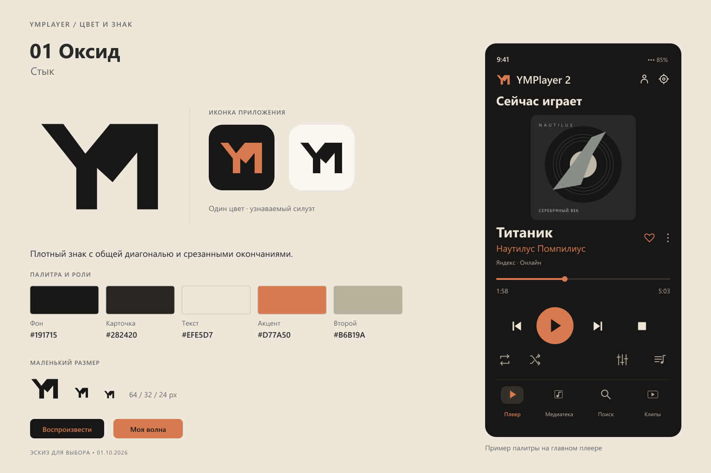
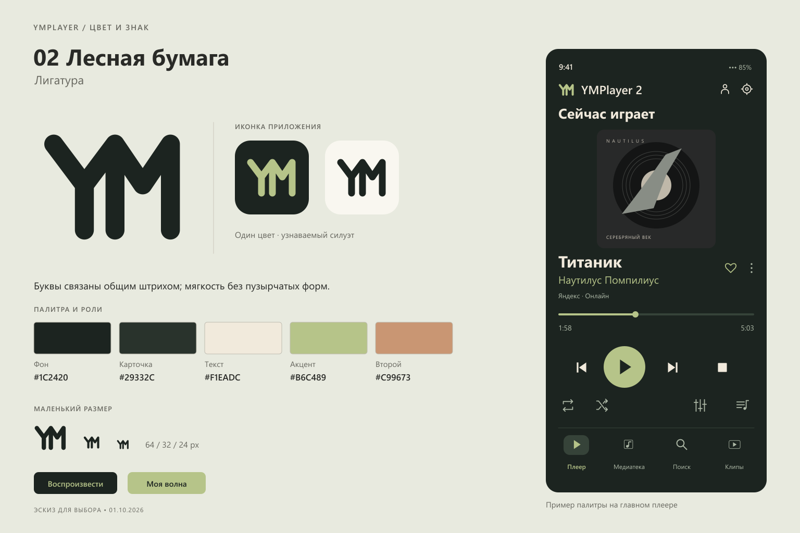
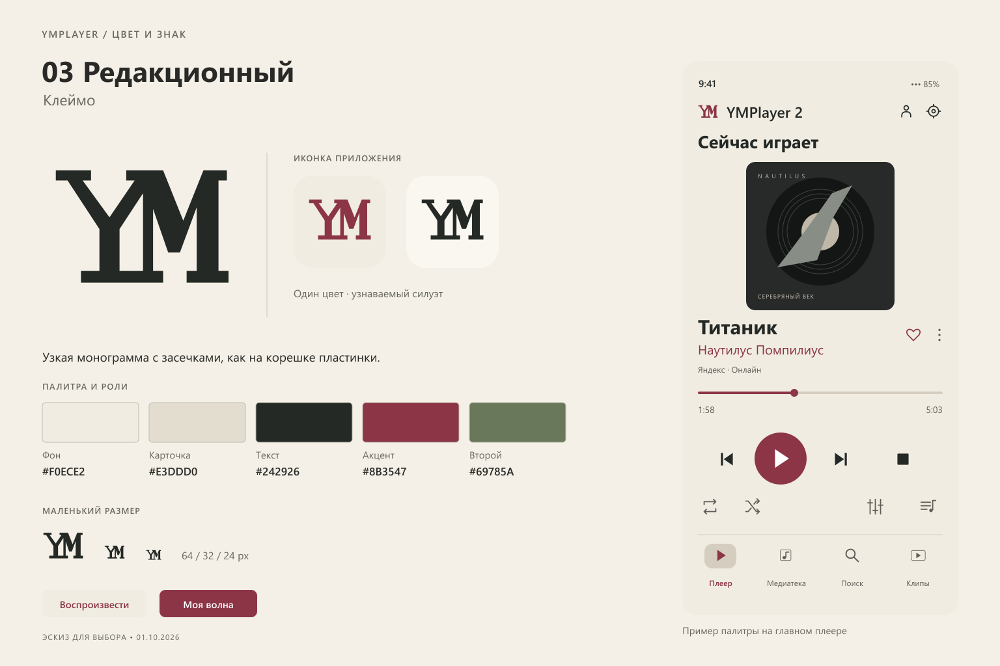
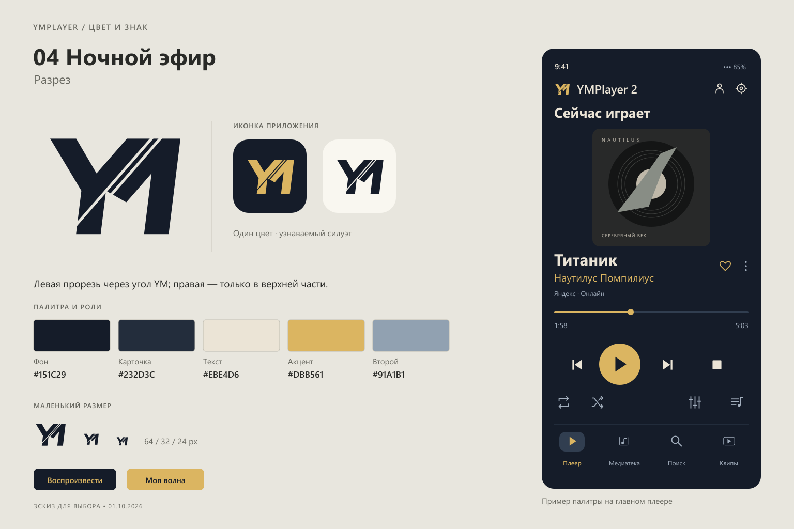
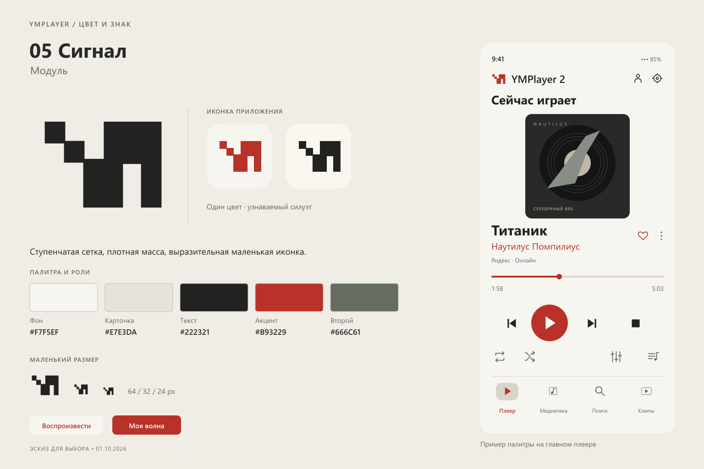
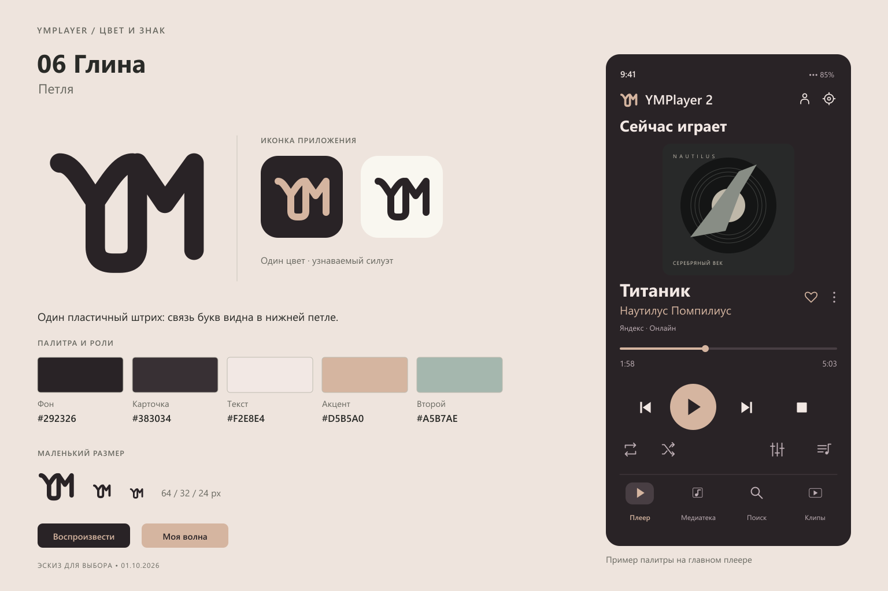

01 / Оксид Стык

Плотный знак с общей диагональю и срезанными окончаниями.
Композиция SVG · Знак SVG · Одноцветный SVG
02 / Лесная бумага Лигатура

Буквы связаны общим штрихом; мягкость без пузырчатых форм.
Композиция SVG · Знак SVG · Одноцветный SVG
03 / Редакционный Клеймо

Узкая монограмма с засечками, как на корешке пластинки.
Композиция SVG · Знак SVG · Одноцветный SVG
04 / Ночной эфир Разрез

Левая прорезь через угол YM; правая — только в верхней части.
Композиция SVG · Знак SVG · Одноцветный SVG
05 / Сигнал Модуль

Ступенчатая сетка, плотная масса, выразительная маленькая иконка.
Композиция SVG · Знак SVG · Одноцветный SVG
06 / Глина Петля

Один пластичный штрих: связь букв видна в нижней петле.
Композиция SVG · Знак SVG · Одноцветный SVG